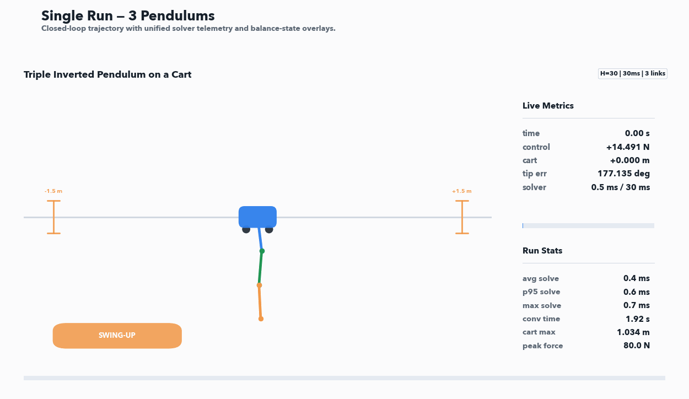
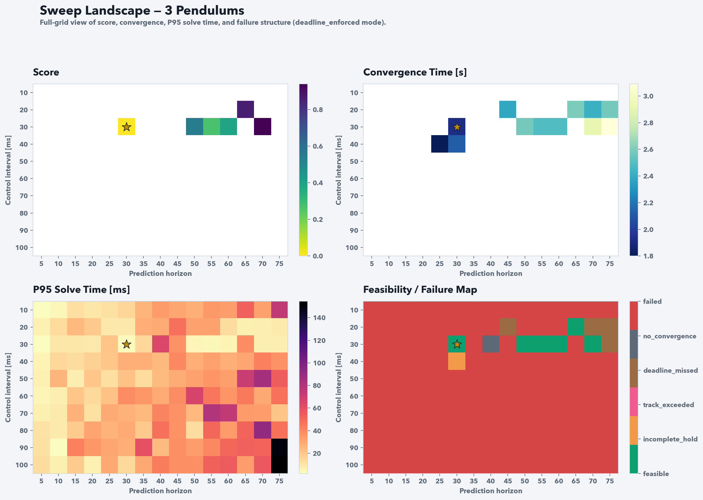
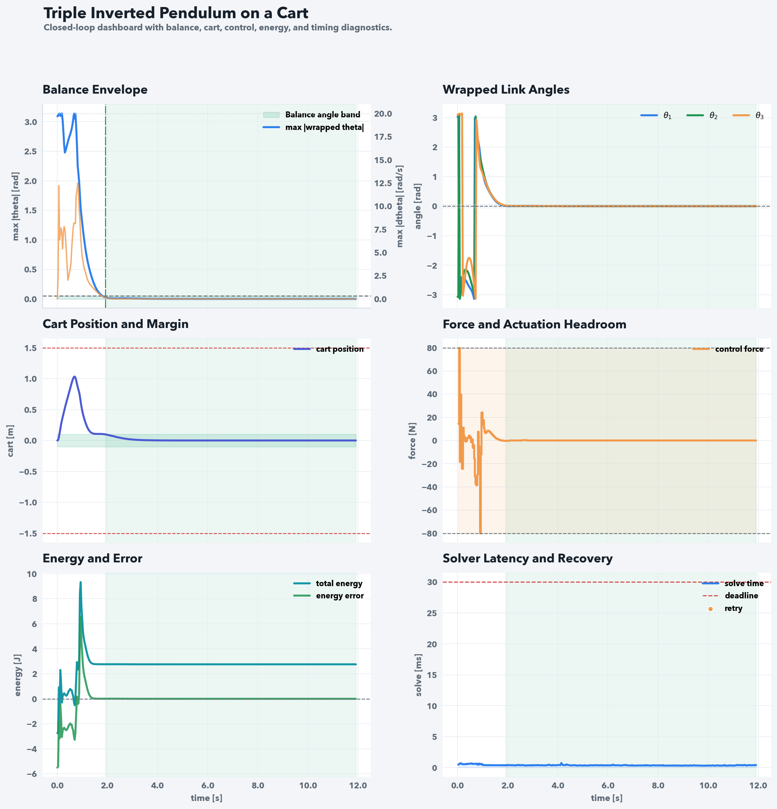
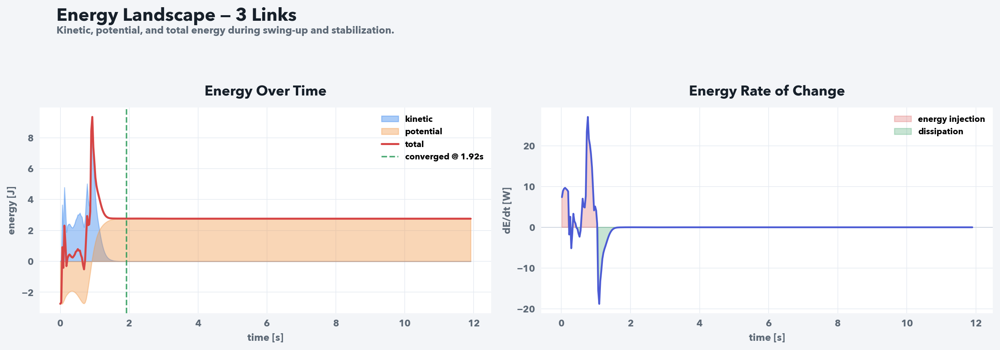
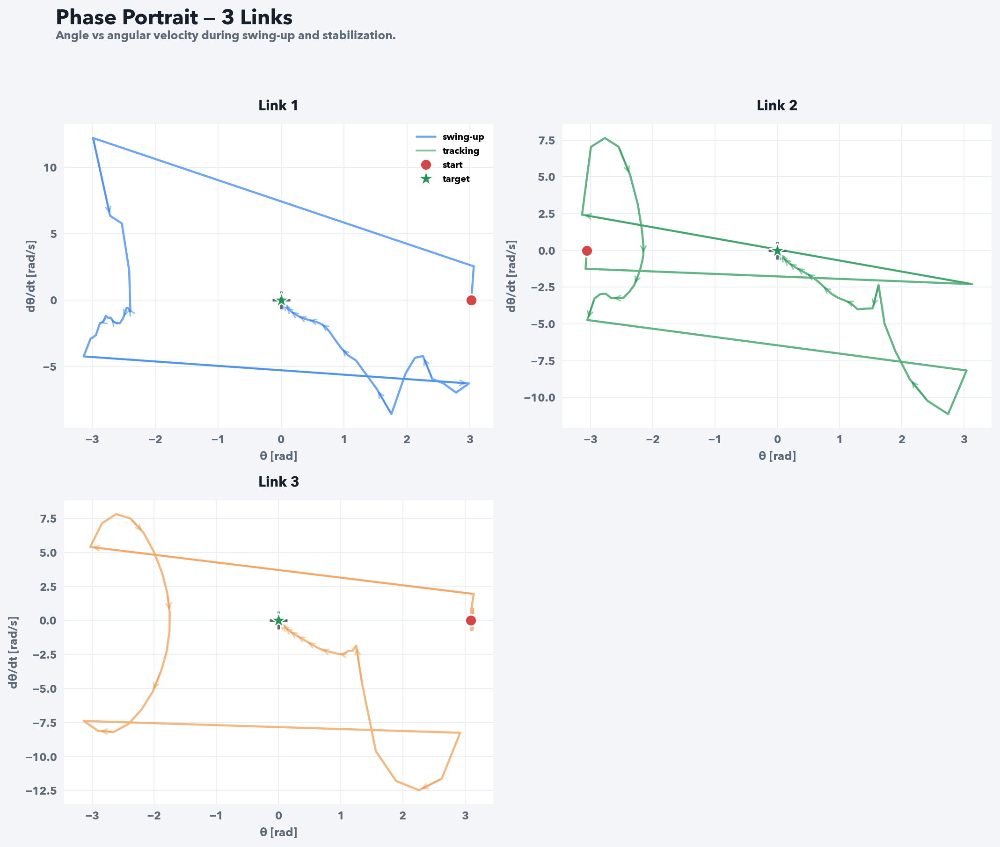
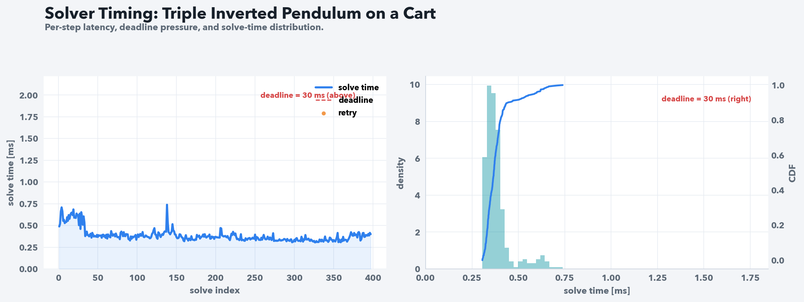
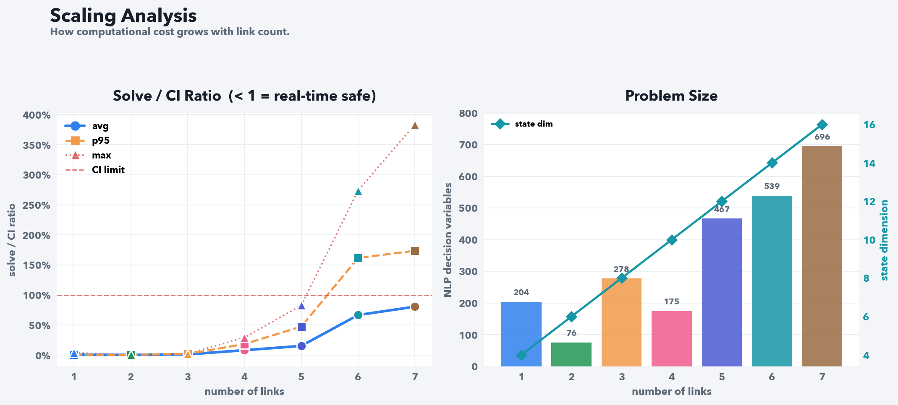

04 / Controls · Dynamics & simulation
N-Link Inverted Pendulum
One horizontal force on a cart has to swing up and balance a chain of pendulums. I wrote one nonlinear MPC stack for one to eight links. Deadline-safe published runs are for one to five links. Six and seven are quality-only. Eight has no converged public winner. I am not claiming hardware.
Recorded simulations
From one link to seven
Select a link count and play its published swing-up run.
3-link simulation
Solver deadline met

- Balance reached
- 1.92 s
- Control interval
- 30 ms
- Prediction horizon
- 30 steps · 0.90 s
- Missed deadlines
- 0
The one- to five-link recordings meet their solver deadlines. Six and seven links demonstrate control quality with additional computation time. All recordings show simulated systems.
Select a plot to inspect it at full size.
01 / Multibody dynamics
One input, many coupled motions
The cart is the only actuated coordinate. Each pendulum joint moves in response to gravity, inertia, damping and the motion transmitted through the chain. Adding a link introduces another angle and angular velocity, while the control input remains a single horizontal force.
The state contains cart position, every link’s absolute angle, cart velocity and every angular velocity. Angles are measured from the upright vertical: zero is balanced above the cart, while π radians is hanging downward. An N-link model therefore has 2 + 2N states, from four states for one link to eighteen for eight.
The symbolic implementation assembles the mass matrix from the links’ centre-of-mass Jacobians and rotational inertias. Velocity-dependent terms and the gradient of gravitational potential provide the nonlinear bias forces. Cart and joint damping complete the generalized force vector.
This assembly avoids repeatedly differentiating the full Lagrangian expression as the chain grows. The repository checks it numerically against an independently reconstructed Euler–Lagrange formulation for one, three, five and seven links.
Dynamics used by the controller
M(q)q̈ + b(q, q̇) = Q(u, q̇)
M describes the coupled inertia; b contains velocity and gravity terms; Q contains cart force and damping. The accelerations become part of the first-order state model used by the integrator.
| Parameter | Configured value | Meaning |
|---|---|---|
| Cart mass | 1.0 kg | Translating base for the pendulum chain. |
| Link length and mass | 0.25 m · 0.25 kg per link | Uniform rigid links, with centre of mass at half-length and distributed rotational inertia. |
| Track bounds | −1.5 m to +1.5 m | The cart must stay within the modeled track. |
| Plant integration | 1 ms physics step | Fixed simulation resolution, independent of the larger MPC update interval. |
| Initial state | Near the downward configuration | Small per-link angle offsets initiate the swing-up; the target is upright at the track centre. |
02 / Nonlinear MPC
Swing-up and balance in one objective
At each update, the controller predicts the chain’s motion over a finite horizon, optimizes a sequence of cart forces, and applies the first force. The process repeats from the new simulated state, continually correcting the prediction.
The objective combines total mechanical energy error with upright-angle error, angular motion, cart position, cart velocity and control effort. The energy residual measures the difference from the chain’s upright potential energy. It encourages the energy transfer needed to leave the hanging configuration, while the other terms draw the links toward vertical and suppress motion near balance.
The active cost uses nonlinear least-squares residuals and a Gauss–Newton Hessian approximation. The upright residual uses sin(θ/2), so equivalent angle wraps represent the same physical orientation after squaring. Separate stage and terminal weights control what matters along the prediction and at its end.
The same objective handles swing-up and stabilization without a prescribed reference trajectory or a separate balance controller. Force and cart-position constraints keep the optimization tied to actuator effort and the available track.
| Residual | Engineering purpose |
|---|---|
| Mechanical energy error | Supply energy for swing-up and approach the upright energy level. |
| Upright angle error | Bring every link toward the vertical target. |
| Angular velocity | Reduce link motion as the chain approaches balance. |
| Cart position and velocity | Return toward the centre and reduce base motion. |
| Applied force | Penalize control effort while respecting the force limit. |
| Terminal residuals | Encourage a useful end-of-horizon state, especially for the longer chains. |
03 / Numerical implementation
Matching the solver to the system
The one- to three-link configurations use sequential quadratic programming with real-time iteration, SQP_RTI. One iteration per control update keeps computation low. The longer chains use full SQP with merit backtracking, additional iterations and stronger regularization to handle their more difficult nonlinear swing-up motions.
Both paths use acados with a partially condensed HPIPM quadratic-program solver, implicit Runge–Kutta integration and the shared nonlinear least-squares cost. Increasing link count changes the problem dimension and its numerical coupling, so the solver profile is part of the controller design.
Python manages model construction, solver generation, parameter searches and reporting. A native C++ execution path loads the same generated solver and simulator libraries for timing-sensitive closed-loop runs. Reusing those artifacts keeps the runtime comparison connected to the same model and optimization problem.
Model
CasADi dynamics
State equations, energy and cost residuals
Optimization
acados + HPIPM
Generated solver and integrator libraries
Execution
Python / C++
Closed-loop simulation and recorded metrics
04 / Controller development
Searching timing, then tuning weights
The timing search varies two parameters together: the control interval and the number of prediction steps. Their product gives the prediction time. A shorter interval gives more frequent corrections but less time to solve; a longer horizon exposes more of the future motion while increasing computational work.
The default search covers ten control intervals from 10 to 100 ms and fifteen horizons from 5 to 75 steps: 150 combinations per evaluation mode. The first pass runs in parallel. Leading candidates are then repeated serially so their final wall-clock timings are less affected by competing search jobs.
Candidate selection first checks successful execution, convergence, sufficient balance hold, track compliance and, in the deadline-enforced mode, zero missed deadlines. Among scoreable runs, the ranking gives 70% weight to the percentile rank of convergence time and 30% to the percentile rank of the 95th-percentile solve-time-to-interval ratio.
CMA-ES then tunes the objective weights at the selected timing pair. A second timing search checks whether those new weights change the best interval or horizon. The final comparison reruns candidates from both searches using their original parameter snapshots and gives priority to a feasible result.
- Search timingCompare interval and horizon combinations.
- Recheck candidatesRepeat the strongest configurations serially.
- Tune weightsUse CMA-ES at the selected timing pair.
- Search againTest timing with the updated objective.
- Compare both passesRerun each candidate with its saved settings.
- Publish the runSave trajectories, timing, plots and animations.


05 / Recorded case study
Following the three-link swing-up
The three-link system has eight states and one force input. In the published run, the controller updates every 30 ms and predicts 30 steps ahead, giving a 0.90 s horizon. The chain starts near the hanging position, with a small offset on each link.
The cart accelerates the links through the swing-up, reaches a maximum displacement of 1.034 m, and returns toward the centre. Peak force reaches the configured 80 N limit during the transient. The links enter the balance region at 1.92 s and remain there through the subsequent hold.
Balance is evaluated jointly: every wrapped angle must be within 0.05 rad of upright, every angular speed within 0.25 rad/s, and the cart within 0.10 m of the centre. The recorded final hold is 10.02 s, with no exits from the balance region.


Case study / Energy & phase
How the chain settles into balance
During swing-up, cart work changes the chain’s kinetic and potential energy. In the energy plot, kinetic energy rises during the fast motion and falls as the links approach upright. Total energy settles near the upright target while the energy error approaches zero.
The phase portraits pair each link’s angle with its angular velocity. Their trajectories finish near the origin, where upright angle and low angular speed coincide. The angle axis is wrapped at ±π, so lines crossing that boundary reflect angle representation during rotation.




06 / Computational performance
Finishing before the next update
Control quality is only one part of the result. A solution must also arrive before the next update if it is to be used on schedule. The simulation therefore supports both deadline-enforced evaluation and a quality mode that allows late solutions.
In the enforced mode, a late solution is replaced by the previously applied force; on the first step, that fallback is zero force. This makes a missed deadline affect the simulated motion. The quality mode still records solve time but applies the computed solution without rejecting it for lateness.
The three-link recording contains 397 timed solves. Its mean solve time is 0.385 ms, its 95th percentile is 0.587 ms and its maximum is 0.739 ms against a 30 ms interval. All recorded solves meet the budget. These timings describe the saved simulation run and its execution environment.


07 / Scaling across link counts
Where computation becomes the constraint
The published recordings converge for one through seven links. The one- to five-link runs meet every recorded solver deadline. Six and seven links reach balance in the quality mode, while some solves exceed their update intervals.
The five-link run illustrates the reduced timing margin: its longest solve takes 24.832 ms out of a 30 ms budget, leaving about 5.168 ms. For six and seven links, the recorded maxima are 136.883 ms and 115.128 ms against 50 ms and 30 ms intervals. The averages alone would hide those late solves.
The framework also models eight links, giving eighteen states. The published eight-link result has not converged, making it the current research boundary for this implementation. The comparison below uses the saved run metrics associated with the featured animations.
| Links | Evaluation | Interval | Horizon | Balance reached | Max solve | Missed deadlines |
|---|---|---|---|---|---|---|
| 1 | Solver deadline met | 50 ms | 40 steps | 3.35 s | 1.973 ms | 0 |
| 2 | Solver deadline met | 70 ms | 10 steps | 1.82 s | 0.403 ms | 0 |
| 3 | Solver deadline met | 30 ms | 30 steps | 1.92 s | 0.739 ms | 0 |
| 4 | Solver deadline met | 60 ms | 15 steps | 4.38 s | 17.536 ms | 0 |
| 5 | Solver deadline met | 30 ms | 35 steps | 2.37 s | 24.832 ms | 0 |
| 6 | Control-quality study | 50 ms | 35 steps | 2.40 s | 136.883 ms | 28 |
| 7 | Control-quality study | 30 ms | 40 steps | 2.34 s | 115.128 ms | 72 |
Balance reached is the first sample inside the configured angle, angular-rate and cart-position thresholds; the subsequent hold is assessed separately. View the run values ↗



08 / Testing & engineering outcome
Checking the model and the experiment
The repository’s regression tests cover the dynamics, numerical metrics, timing behavior and search workflow. The multibody test compares accelerations, mass matrices, bias forces and energy against the Lagrangian reference at sampled states for four different link counts, using a numerical tolerance of 10⁻⁹.
Other tests exercise the fixed physics substeps, deadline fallback, convergence and hold accounting, and serial revalidation of sweep candidates. These checks address whether the simulated plant, the controller timing and the reported results remain consistent as the framework evolves.
The resulting project is a reusable control-development workflow: build the model once, vary the link count, search the timing, tune the objective and inspect the resulting motion alongside its computational cost. The demonstrations and benchmarks presented here are simulation results.
| Area | What is checked |
|---|---|
| Multibody dynamics | Agreement with an Euler–Lagrange reference for 1, 3, 5 and 7 links, including state derivatives and energy. |
| Plant integration | The number of 1 ms substeps follows the control interval, and the simulated state advances under applied force. |
| Deadline handling | On-time solutions are applied; late solutions retain the previous force in the enforced mode. |
| Convergence metrics | Angle, angular-rate and cart-position thresholds, balance entries and exits, and hold duration. |
| Search and tuning | Candidate revalidation, mode separation, profile selection and reporting consistency. |
Engineering outcome
Making control quality and computation visible
The work combines nonlinear dynamics, optimization, runtime development and automated experimentation. Recorded trajectories show the physical behavior; per-step timing shows the cost of producing that behavior. Together they make it possible to assess how the controller scales.